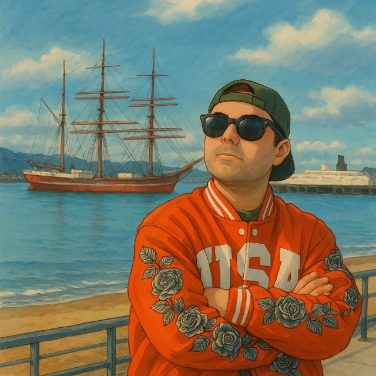

███████╗ █████╗ ███╗ ███╗ █████╗ ███╗ ██╗ ██╔════╝ ██╔══██╗ ████╗ ████║ ██╔══██╗ ████╗ ██║ ███████╗ ███████║ ██╔████╔██║ ███████║ ██╔██╗ ██║ ╚════██║ ██╔══██║ ██║╚██╔╝██║ ██╔══██║ ██║╚██╗██║ ███████║ ██║ ██║ ██║ ╚═╝ ██║ ██║ ██║ ██║ ╚████║ ╚══════╝ ╚═╝ ╚═╝ ╚═╝ ╚═╝ ╚═╝ ╚═╝ ╚═╝ ╚═══╝ ██╗ ██╗ ██╗ ██╗ █████╗ ███╗ ███╗ ███████╗ ███████╗ ██╗ █████╗ ███╗ ██╗ ██║ ██╔╝ ██║ ██║ ██╔══██╗ ████╗ ████║ ██╔════╝ ██╔════╝ ██║ ██╔══██╗ ████╗ ██║ █████╔╝ ███████║ ███████║ ██╔████╔██║ █████╗ ███████╗ ██║ ███████║ ██╔██╗ ██║ ██╔═██╗ ██╔══██║ ██╔══██║ ██║╚██╔╝██║ ██╔══╝ ╚════██║ ██║ ██╔══██║ ██║╚██╗██║ ██║ ██╗ ██║ ██║ ██║ ██║ ██║ ╚═╝ ██║ ███████╗ ███████║ ██║ ██║ ██║ ██║ ╚████║ ╚═╝ ╚═╝ ╚═╝ ╚═╝ ╚═╝ ╚═╝ ╚═╝ ╚═╝ ╚══════╝ ╚══════╝ ╚═╝ ╚═╝ ╚═╝ ╚═╝ ╚═══╝

Hi, I'm Saman. I'm currently a Ph.D. student in Computer Science at Arizona State University.
My research explores different ways AI can improve healthcare, especially type 1 diabetes. Over the years, I've worked on forecasting blood glucose from time-series data, developing reinforcement learning frameworks for personalized treatment recommendations, building Android applications for health data collection, analyzing smartwatch sensor data, and creating adherence modeling simulators based on patients' psychological profiles.
Although these projects span different areas, they're all driven by the same question: How can we build AI that is not only accurate, but also practical, trustworthy, and genuinely helpful? I enjoy turning research ideas into systems that people can actually use, with the hope of making healthcare a little smarter, more personalized, and more accessible.
Outside of healthcare, I'm always excited to explore new AI and machine learning ideas. I enjoy working with time-series data, reinforcement learning, and building intelligent systems across different domains, and I'm always looking for opportunities to learn, build, and solve interesting real-world problems.